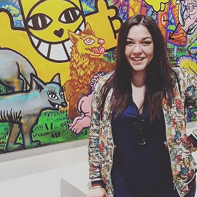
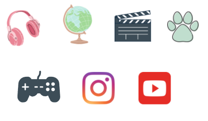
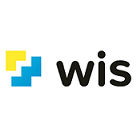

Cheffe de projet digital

Orane DAURIN
27 ans, Blagnac
Permis B
Contacts
Téléphone : 07.81.51.64.35
Mail : orane.daurin@gmail.com
Centres d'intérêt

Personnalité
Curiosité
Sens de l'organisation
Sens de la communication
Esprit d'équipe
Goût de l'innovation
MES COMPETENCES PROFESSIONNELLES
Accompagnement à la transformation numérique d'une entreprise
- Identification des besoins : mise en place d'ateliers d'idéation
- Analyse de solutions
- Intégration de nouveaus outils digitaux : aide et conseils
- Accompagnement des collaborateurs : création de support d'informations, formations
Management commercial & relation client
- Gestion du relationnel client
- Identification et qualification du besoin client
- Développement business : élaboration d'actions ciblées, prospection téléphonique, création de partenariats
- Pilotage d'équipe de travail, management interne
Marketing & communication
- Evénementiel : organisation d'événements BtoB, BtoC
- Communication interne/externe
- Création de supports divers de communication interne/externe
- Animation de rénunions et de formations
- Site internet, application : analyse et résolution des dysfonctionnements éventuels
- Web : gestion d'image de marque, alimentation des réseaux sociaux
- Positionnement concurrentiel, réalisation d'enquêtes de satisfaction
- Création et suivi d'un projet digital
MES EXPERIENCES PROFESSIONNELLES
CHEFFE DE PROJET DIGITAL- Cabinet Valoris Géomètre Expert
TELECONSEILLERE BANCASSURANCE- Banque Populaire Occitane
Mai 2017 - Octobre 2020
- Vente de produits bancaires, d'assurances et de crédits
- Analyse des dysfonctionnements et des difficultés techniques de connexion au site, à l'application ou aux services
- Coaching d'appel
- Rôle d'Ambassadrice digitale
- Accompagnement des collaborateurs à la transformation digitale de la banque

BENEVOLE - Hôpital Sourire
Mission paquets cadeaux, tombola etc...
Mai 2017 - Octobre 2020
.jpg)
MANAGER COMMERCIAL ET RELATION CLIENT - Alternance - Laser Quest Blagnac
Mars 2013 - Juillet 2016
- Prise de rendez-vous client
- Gestion d'un point de vente
- Création d'évènements
- Création de soirées d'entreprises
- Gestion de devis et factures
MES FORMATIONS

MASTER EXPERTISE DIGITALE Parcours Manager d'entreprise - Alternance - Campus WIS Toulouse
Septembre 2022-2024
BACHELOR CHEF DE PROJET DIGITAL - Alternance - Campus WIS Toulouse
Septembre 2021-2022
- Marketing & communication digitale
- UX-UI Design
- Techniques de developpement web et mobile

BTS NEGOCIATION RELATION CLIENT - Alternance - CFA Commerce et Services Blagnac
2014-2016
- Marketing & communication
- Techniques de ventes
- Gestion de la relation client
BACCALAUREAT SCIENTIFIQUE - Lycée Le Ferradou Blagnac
2012